This module, based off chapters 13-18 of The Selenium Guidebook: Java Edition by Dave Haeffner, brings you to the next level with learning how to plan a test strategy, run tests in parallel, use the Sauce Connect Proxy, and add your tests to a pipeline with the Jenkins Continuous Integration (CI) server. Learn about best practices to avoid creating a test suite that is brittle when used in parallel or with tools that make for more automation (but more latency) such as the Sauce Labs platform or CI servers. Use tags to categorize tests for use in different situations and gain the tools and skills to truly automate your testing practices.
Skills & Knowledge
- Set up and run tests using the Sauce Connect Proxy tunnel with terminal commands and the Sauce Labs application interface. Set up environment variables and access them with the Sauce Connect software to run tests using the tunnel.
- Use JUnit and Maven's Surefire Plugin to run tests on the Sauce Platform in parallel and in random order
- Create category interfaces for tests and test classes and use the
<groups>tag inpom.xml, as well as themvn -Dgroupstag in the terminal to run different groups of tests for different purposes - Set up the the Jenkins CI server on your local machine and learn how to use the user interface to set up projects that run your tests, as well as configure the Jenkins CI server
- Add your credentials to your instance of a Jenkins CI server using Sauce OnDemand and run a test that you can view in both the Jenkins console and the Sauce Labs application
- Modify the configuration of a local instance on a Jenkins CI server, add plugins, and update a test to take desired capabilities from a config.java file updated for your Jenkins tests
- Run tests using Sauce Connect Proxy through your Jenkins server, passing information back and forth from Sauce Labs to Jenkins using Sauce Connect
- Develop a strategy for planning how many and which types of tests your team and company will develop to best build automated testing suites for your product
- Connect how the tests that you have written in the UI using Selenium can be integrated into a comprehensive testing strategy that tests on multiple layers
- Establish autonomous test suites that are set up to run without relying on the execution of any other tests
- Understand how static variables can impede parallel test function since only one unmodifiable instance can exist at a time
- Describe a use case for the Sauce Connect Proxy and how it can allow access to secure applications while maintaining data privacy
- Understand how a CI server like Jenkins can be used to automate the software development pipeline and automate the testing to run specific tests with certain triggers
- Understand how to configure a local instance of Jenkins to work with a test suite and the Sauce OnDemand plugin
Testing pyramids are a way of framing the strategy for what kind of tests you are going to create as a part of your testing suite(s) and expressing the amount of types of tests your team or company is going to create. At the bottom of the pyramid is the easiest, most plentiful, and typically cheapest type of tests to create. At the top of the pyramid are the types of tests that are more labor- and cost-intensive tests that make up a smaller portion of your suite(s). Learn more about the details of a test pyramid here.
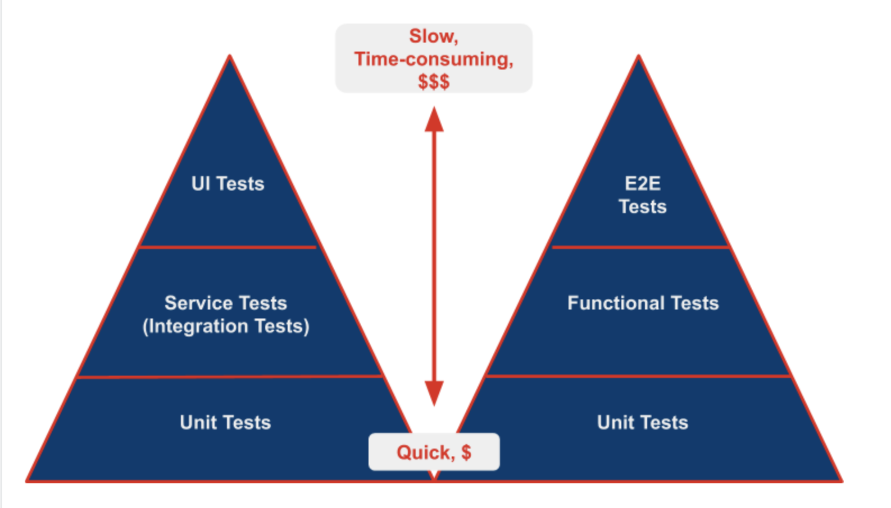`
There are many versions of the pyramid created by experts in the testing field, and your own team or company can decide on which strategy for developing tests works for you. It is, however, important to understand how the plan is set up and the considerations for types of tests, the best layer to test on, and how to plan so your test suite is accurately fulfilling the purposes that stakeholders expect.
Video
Watch 5.02 Testing Strategy, Excerpts from "Pyramids Are Ancient" By Richard Bradshaw to learn about how to develop a testing strategy for your business, as well as tip on how to plan and identify the layers of your application you should run your tests on.
Testing Layers
An important thing to understand is that there is so much more to test than just the UI layer that you have been testing with Selenium. In this model, the different places the app interacts with layers of the platform is demonstrated.
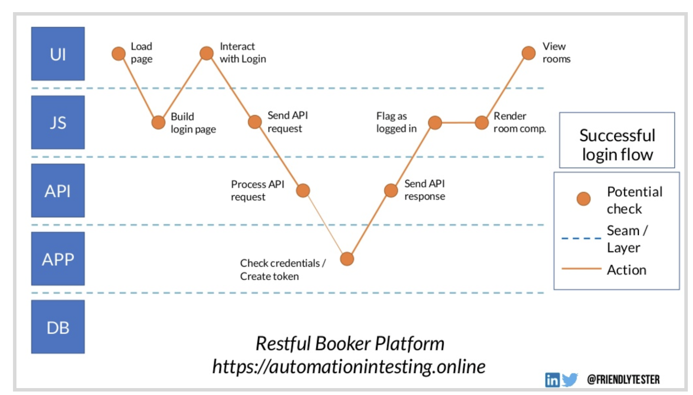`
Here you can see the following interactions occur:
- User loads the login page.
- React (A JS framework) builds the elements on the login page.
- User performs login on interface.
- A "login" API request is sent by the JavaScript layer.
- The API processes and directs the login request.
- The credentials of the login request are checked by the application.
- A response is sent to the API from the app (e.g., "allow login" or "failed login").
- The login is sent to the JavaScript layer to process the page after login.
- The post-login page is rendered.
- The user sees the post-login page on the interface.
When choosing a testing strategy, you need to consider two important things.
- What do I actually want to test? Do you want to test that the page after the login loads, or do you want to check that the login credentials are sent correctly?
- Which is the best layer to test this on?
Selenium is intended to be mainly a UI testing tool, however, as you are developing your overall strategy, and building a repertoire of new tools and frameworks, you can use Selenium alongside other tools that you may know. Depending on which tools and frameworks you know, and which you know you will have time to learn, you should let your skill set guide your choices for a good testing strategy that allows you to automate on the best layer of an application.
TRIMS
Learning the tools to test things like API calls means that you can write shorter, more concise tests where you don't have to do a ton of clicks on a screen to get the place or feature you want to test. Using TRIMS means you can make your tests more Targeted, Reliable, Informative, Maintainable, and Speedy.
As an example, a bad test would tell you had a failed login. Why did that test fail? Did the developer change something in the UI like a "success" message for login? Did it take too long to load the post-login page? Were incorrect credentials sent to the API?
A good test would tell you exactly what failed and how it failed. Some examples include tests such as "login success message not present" or "failed to return a 200 code from API." Understanding the tools that you have at your disposal and what skills you can develop next will help you work towards creating a well-planned, efficient testing strategy.
Sauce Connect Proxy is software that enables you to establish a secure connection between applications hosted on an internal server and the Sauce Labs virtual machines (such as Jenkins) or real devices that are used for testing. It also allows you to create a secure connection for uploading tests, application, and source code.
In many cases, testers need to run their tests on internal sites. These can be dev/staging versions of their production site or actual internal sites only employees use. In either case, these sites are not available out in the open internet for sauce to access. The best, most secure option is to create a connection with Sauce Connect Proxy. Sauce Connect Proxy uses a proprietary TLS protocol to encrypt traffic between Sauce Labs and your network and servers.
Download Sauce Connect Proxy
The first step is to download The Sauce Connect Proxy software – available on the **Sauce Connect Proxy **page in the Sauce Labs Cookbook – and extract the contents of the .zip or .gz download package. You can also get the software on the Sauce Labs platform under Tunnels.

Once you've extracted the contents, take the Sauce Connect Proxy folder and move it into another directory. In this example, I moved mine into the Documents folder.

Set Up Your Tunnel
Go to the Tunnels tab in the Sauce Labs app.
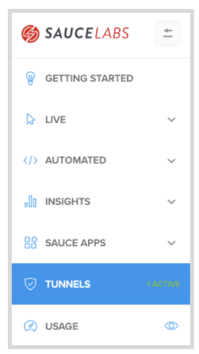
Navigate to the folder using the terminal where you saved the Sauce Connect download (this one is in Documents/sc-4.6.2-osx). Next, type and run the command below. Make sure to fill in your credentials (username after the -u command and access key after-k) and add your tunnel name (aka tunnel identifier) after the -icommand.
bin/ sc -u <SAUCE_USERNAME> -k <SAUCE_ACCESS_KEY> -i <SAUCE_TUNNEL>
You can copy the command that you will find at the bottom of the Tunnels page, and paste this into your terminal as well, instead of typing what is above. Once you paste, append the command line with -i <Sauce tunnel name>:. In this example, I've called mine linds-proxy-tunnel.

Your command should look like this:

After -u you will see your username and after-kyou will have your access key, and -iprepend the name you made up for your tunnel. Learn more about the other commands you can use to configure your tunnel at Sauce Connect Proxy Command-Line Quick Reference Guide. Hit enter and you should see your tunnel up and running.

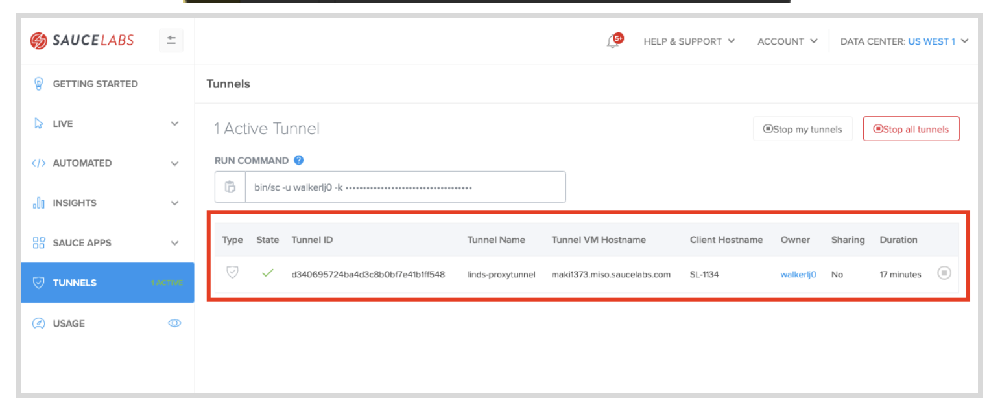
Set Up Proxy Environment
Since you are using environment variables in our Config.java file, for your SAUCE_USERNAMEandSAUCE_ACCESS_KEY,we will set up an environment variable for yourSAUCE_TUNNEL as well.This variable will store the tunnel identifier, so after you start up a Sauce Connect tunnel, you can run your tests using it.
Add the variablesauceTunnelin your Config.java file, at the bottom of the list of variables:
// filename: tests/Config.java
//...
public static final String sauceTunnel = System.getenv("SAUCE_TUNNEL");
}
Next, in BaseTest.Java, you are going to add in a third, else ifstatement that accounts for when you are running a test with Sauce Connect. It's almost exactly the same as the case when the host is"saucelabs" except you will be adding in the Sauce Option for the tunnel
// filename: tests/BaseTest.java
// ...
else if (host.equals("saucelabs-tunnel")) {
MutableCapabilities sauceOptions = new MutableCapabilities();
sauceOptions.setCapability("username", sauceUser);
sauceOptions.setCapability("accessKey", sauceKey);
sauceOptions.setCapability("name", testName);
sauceOptions.setCapability("tunnelIdentifier", sauceTunnel);
MutableCapabilities capabilities = new MutableCapabilities();
capabilities.setCapability("browserName", browserName);
capabilities.setCapability("browserVersion", browserVersion);
capabilities.setCapability("platformName", platformName);
capabilities.setCapability("sauce:options", sauceOptions);
String sauceUrl = String.format("https://ondemand.saucelabs.com/wd/hub");
driver = new RemoteWebDriver(new URL(sauceUrl), capabilities);
sessionId = ((RemoteWebDriver) driver).getSessionId().toString();
sauceClient = new SauceREST(sauceUser, sauceKey, DataCenter.US);
}
// ...
In this case, which you have named saucelabs-tunnel, when you run your test, you will set all the capabilities you did before, but notice how the sauceTunnelvariable is being used by setCapabilities, right under where you set the testName capability. The reason that we need to create a whole new case is that the tests will error if they are given a tunnel identifier, and it is not used.
Run Tests Using Sauce Connect Proxy
Once your tunnel is up and running, (you should see the message Sauce Connect is up in terminal) and you have updated your config.js and BaseTest.java files, you can run your tests in Sauce Labs using Sauce Connect Proxy. First, update your.bash_profilewith an environment variable (it must match thetunnel idyou used to start the tunnel).

You will want to restart your terminal and run source ~/.bash_profile so your machine looks for the new SAUCE_TUNNEL variable.
Now try running the command in terminal:
mvn clean test -Dhost=saucelabs-tunnel
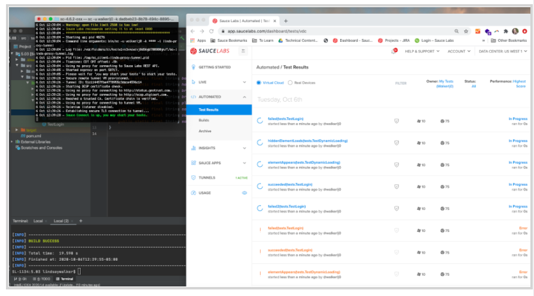
NOTE
–
You will run your test through the tunnel, and when you log into the SauceLabs UI, you should see the tests being run, and that there is an active tunnel:
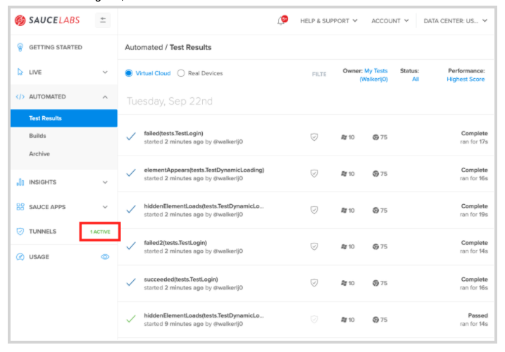
You can see example code for this lesson here.
Final Code
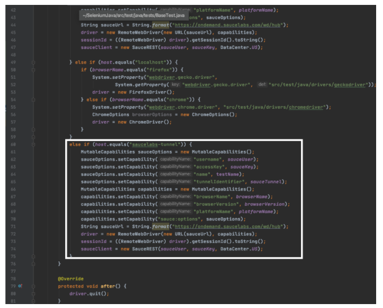
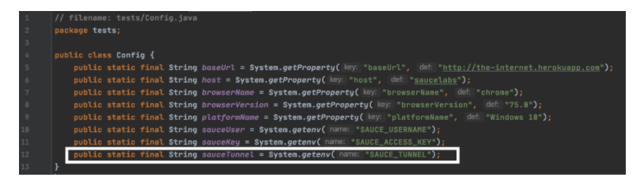
Your tests still take a good deal of time to run since they're executing in series (i.e., one after another). As our suite grows, test latency will grow with it, if you continue to run tests in series the time it takes to run your test suite can grow exponentially.
In this lesson you will be learning how to set up Sauce Labs to run tests in parallel. This means that you can run two or more tests, using two or more instances ofBaseTest.javaat the same time. Previously what you were doing was runningTestLogin.javafirst, then running TestDynamicLoading.javaonce it was done.
Parallelization is one of the main advantages to using a platform like Sauce Labs, however you also must be careful when designing a test suite to make sure the tests can be run in parallel, and in any order, or else account for and create code that does run certain tests in order. Luckily, our test suite has been well set up to run in parallel.
To run the tests in parallel, you will be using JUnit and Maven's Surefire Plugin.
Autonomous Tests
Autonomous tests are the type of tests that are not dependent on other tests to be run. Consider the following set of tests:
- LoginTest– This test is performed first to allow you to login to the platform.
- ShoppingTest– This test is performed second, where the user chooses and adds an item to the test.
- CheckoutTest– This test is performed third, where the user accesses the checkout screen where they can pay and order the item from their shopping cart.
Clearly these tests aren't autonomous when you are doing User Interface (UI) tests; you cannot perform CheckoutTest until you have logged into the platform and chosen an item for the shopping cart. There are ways, however, to set up your test so you can "jump right in" with a filled shopping cart without having to wait for other tests to run by using API calls and other tricks that can help you write a suite of autonomous tests.
Avoid the Static Keyword
As an example, if the SauceClient was declared as private static SauceRest sauceClient;, then only one API communication would be allowed to occur at once, which would make running tests in parallel impossible. Same thing if you declared before as protected static void before().
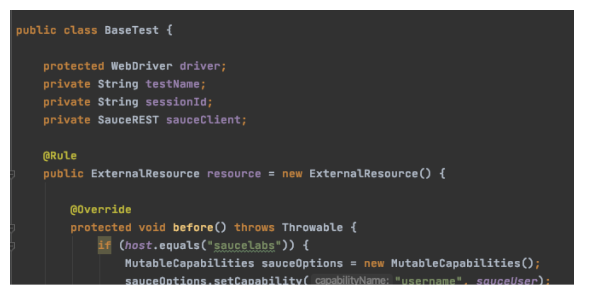
Part 1: Add Configuration Options to your Surefire Plugin
You should already have the maven-surefire-plugin in your pom.xml file within the <build> tags. If for some reason you don't, add it in now:
// filename: pom.xml
// ...
<plugin>
<groupId>org.apache.maven.plugins</groupId>
<artifactId>maven-surefire-plugin</artifactId>
<version>2.18.1</version>
</plugin>
// ...
What you will do is add in <configuration> options that will allow you to run tests in parallel. Underneath <artifactID>, add in a <configuration> opening and closing tag, and within that tag add in the all <parallel> parameter.
// filename: pom.xml
// ...
<plugin>
<groupId>org.apache.maven.plugins</groupId>
<artifactId>maven-surefire-plugin</artifactId>
<configuration>
<parallel>all</parallel>
</configuration>
<version>2.18.1</version>
</plugin>
The allparameter tells you to run all suites, classes, and methods in parallel. You can also choose to run one or multiple of those options.
Underneath parallel, add in parameters for the number of thread counts for methods, set unlimited thread counts to true. This will allow you to use as many threads as CPUs you have available to you, and not run multiple tests in the same thread. <threadCountMethods> sets the number of methods (but not classes or suites) to be tested at once at a limit of 30. These configurations optimize the running of large test suites.
You also don't want to put the output for the reporting to be created in a file, otherwise you cannot run tests in parallel, so we set <redirectTestOutputToFile> tofalse.
// filename: pom.xml
// ...
<threadCountMethods>30</threadCountMethods>
<useUnlimitedThreads>true</useUnlimitedThreads>
<redirectTestOutputToFile>false</redirectTestOutputToFile>
// ...
Part 2: Run Parallel Tests
Before you get started, head to the Sauce Labs Dashboard and look under **Account > User settings** and check out how many tests you (and your team) can run at once.

Once you are sure that you are able to run tests in parallel (you should have less tests than your concurrency limit), you can run your tests. If you send more jobs than your concurrency limit, Sauce Labs will queue the excess and run them as the initial batch of jobs finish.
Runmaven clean test -Dhost=saucelabsand visit the Sauce Labs Dashboard while your tests are running. You should see more than one test running at the same time, and notice that your test suite as a whole runs more quickly! You can see the completed code here.
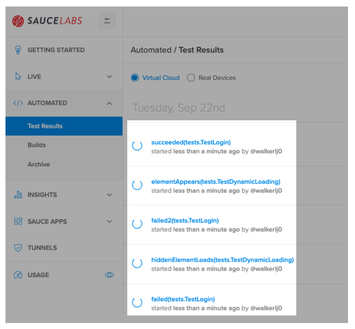
Part 3: Randomize Your Tests
You might ask, why randomization? This is a very effective way to see if your tests are truly atomic and independent of one another. As you run more and more tests, it's important to make sure that they aren't dependent on the behavior of a different test, because conditions will not always be the same as you use tests for different cases.
In your pom.xml file, below the <redirectTestOutputToFile>,add in:
// filename: pom.xml
// ...
<runOrder>random</runOrder>
// ...
Now run your tests using mvn clean test -Dhost=saucelabs and you should see your tests run in a different order than before.
You can see the example code here.
Final Code
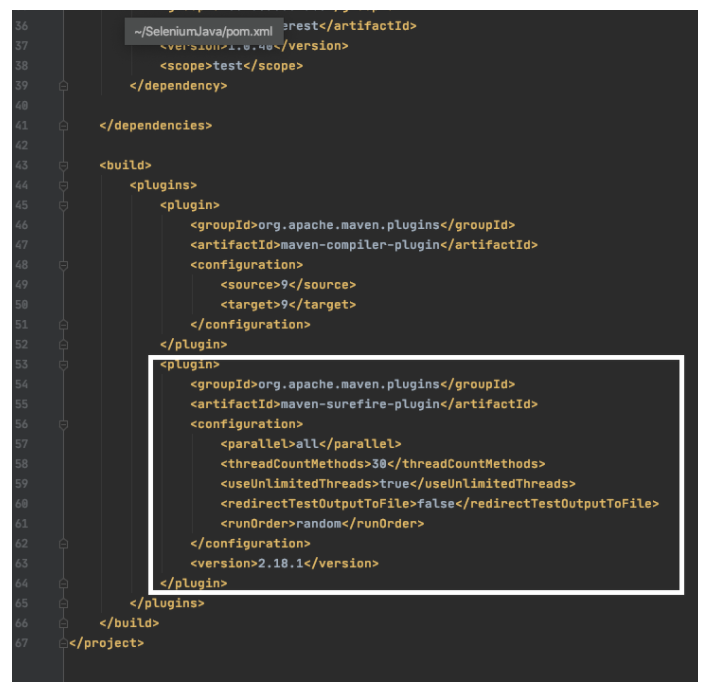
Quiz
In order to get the most out of your tests, you'll want a way to break them up into relevant, targeted chunks. Running tests in smaller groupings (along with parallel execution) will help keep test run times to a minimum and help you quickly sift through test results and target your tests.
In order to do this with Java, you will need to use categories: _Shallow, deep, and all._ Shallow tests are equivalent to _smoke _(or sanity) tests. These should pass before you can consider running the deep tests. Running all will run all the tests in your suite.
Part 1: Adding Test Interfaces
For each category, You will need to create an interface file. Create a new package (right click in the directory Test > New > Package) called groups inside of the tests package. Inside groups (right click in the directory groups > New > Class) you'll create three interface files – All.java, Deep.java, and Shallow.java.
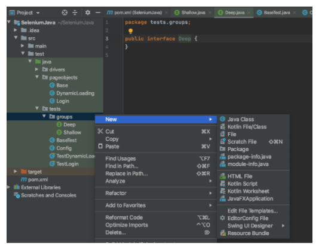
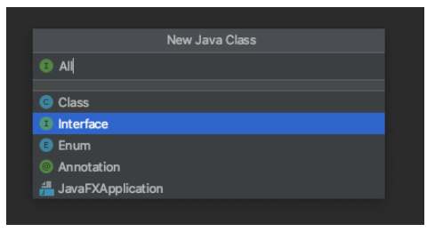
In each of the interface files, add in the following code:
// filename: tests/groups/All.java
package tests.groups;
public interface All { }
// filename: tests/groups/Deep.java
package tests.groups;
public interface Deep extends All { }
// filename: tests/groups/Shallow.java
package tests.groups;
public interface Shallow extends All { }
Notice how bothShallow andDeep extend the All interface, making them a subset of All.
Now you will add the categories to your tests. Underneath the@Test annotations in TestLogin.java, add in the following categories:
// filename: tests/TestLogin.java
// ...
@Test
@Category(Shallow.class)
public void succeeded() {
// ...
@Test
@Category(Shallow.class)
public void failed() {
// ...
At the top of TestLogin.java, in the imports lists, import in the Categories class and the Shallow interface you just created:
// filename: tests/TestLogin.java
// ...
import org.junit.experimental.categories.Category;
import tests.groups.Shallow;
// ...
In TestDynamicLoading.java, annotate the entire class TestDynamicLoading like so, and import theCategories class andDeep interface:
// filename: tests/TestDynamicLoading.java
// ...
import org.junit.experimental.categories.Category;
import tests.groups.Deep;
@Category(Deep.class)
public class TestDynamicLoading extends BaseTest {
// ...
Part 2: Running Tests with Categories
Before you can run your tests with these categories, you need to be able to specify a category as a runtime property. For that, you'll modify pom.xml. In the <properties> tags add a <groups>tag as a child like so:
// filename: pom.xml
// ...
<groups>tests.groups.Shallow</groups>
</properties>
// ...
This will set a default group to run when you tests are run, however you can also specify which groups you want to run using the maven -Dgroupsexecution commands:
mvn clean test -Dgroups=tests.groups.Shallow
mvn clean test -Dgroups=tests.groups.Deep
mvn clean test -Dgroups=tests.groups.All
You can also specify multiple tags by separating them with a comma (without spaces).
mvn clean test -Dgroups=tests.groups.Shallow,tests.groups.Deep
Try running your tests with the following commands above, and check to see if the same tests are run on the Sauce Labs dashboard:
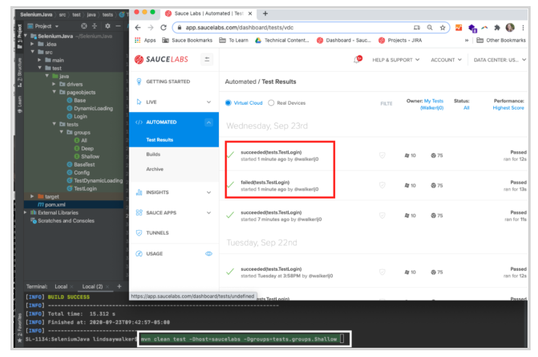
You can see the complete code here.
Final Code
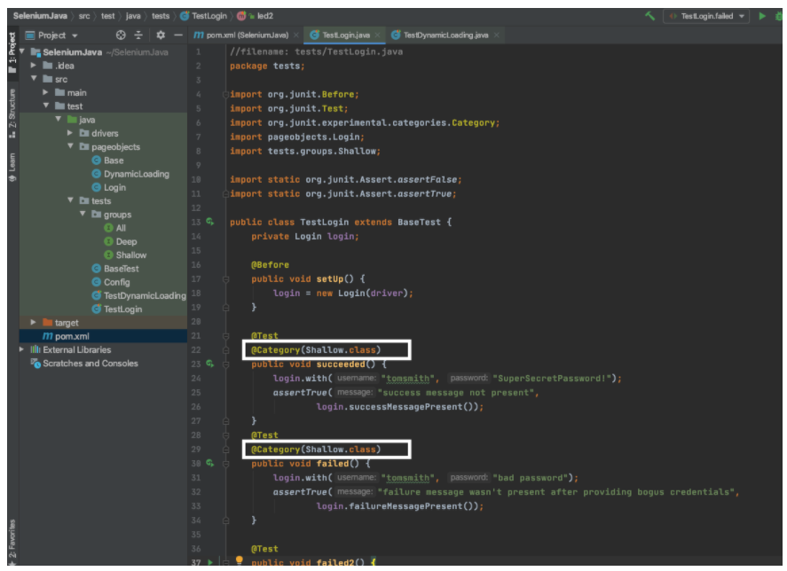
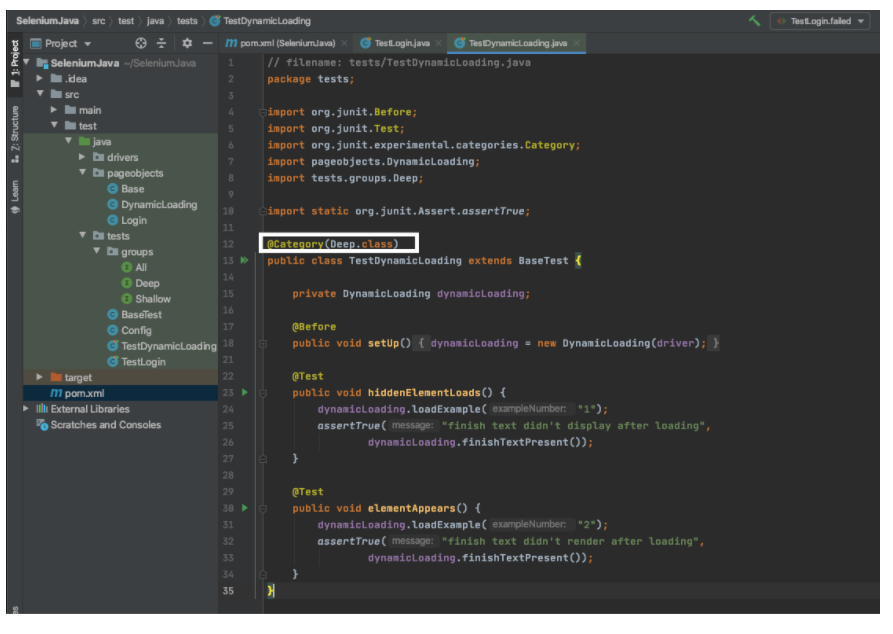
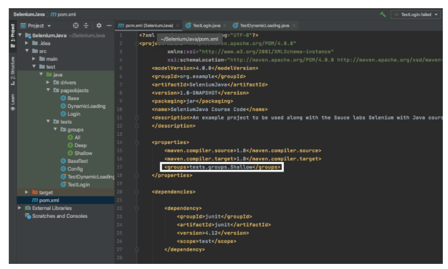
You'll probably get a lot of mileage out of your test suite in its current form if you just run things from your computer, look at the results, and tell people when there are issues. But that only helps you solve part of the problem.
The real goal in test automation is to find issues reliably, quickly, and automatically. We've built things to be reliable and quick. Now you need to make them run on their own, and ideally, in sync with the development workflow you are a part of.
To do that you need to use a Continuous Integration server.
CI Servers
A Continuous Integration server (CI server) makes it possible for several developers to merge their code into a central repository, then automate the process of building, testing, and deploying the set of code with the entire team's contributions. As an example, In GitHub, this would be a certain branch of a shared repository. A CI server can be set up so that it takes updated code through the process several times a month, week, or even a day.
The great thing about doing this is that code from several teams or developers can be brought together into the same working project quickly and tested, instead of developers trying to test their code in isolation (and not know what could break when all contributors' code is built together).

The best thing about using Jenkins is that it has a lot of features that make your tests easier. You can set it up to automatically pull in your code from a GitHub repository, as well as trigger projects that contain your test code to run a given suite of tests automatically when certain things occur, such as when a pull request is made, or set up test suites to run on a schedule.

In the next couple lessons, you will dip your toes into adding and running your tests with the Jenkins server so you are ready to work with the DevOps team on the key test phase of the CI pipeline. Typically, most tests that are run on a CI Server are unit (and potentially integration) tests, and you can very easily add in our Selenium tests as well. Learn more about Continuous Integration servers here.
Set Up Jenkins CI Server
Jenkins is a fully functional, widely adopted, free, and open-source CI server. It's a great candidate for us to try. You will use Homebrew to install it on your computer.
NOTE
–
Let's start by setting up Jenkins on your local machine and using the test code from your computer as well. Keep in mind that this isn't the proper way to go about this — it's merely beneficial for this example. To do it right, the Jenkins server (i.e., master node) would live on a machine of its own, or in a Virtual Machine (VM) like a Docker container.
These instructions give you the step-by-step for how to set up on MacOS, however there are instructions for other operating systems, as well as the option for setup using a Docker container with other operating systems here.
Jenkins Setup
A simple way to get started is to use Homebrew to install Jenkins on MacOS. Once Homebrew is installed on your computer, use the instructions on the Jenkins download page. If you are using Homebrew on MacOS, all you need to do is run this command in the terminal:
sudo brew install jenkins
You will have to enter your password, and Jenkins should install on your machine.
Jenkins was built on Java, and in order for your program to work, you will also need to install either Java version 8 or Java version 11. If you try to install Jenkins and get this error, install Java 8 or 11 and retry installing Jenkins.

NOTE
–
Run Jenkins
Once you have all dependencies (Java 8 or 11 and Homebrew) with Jenkins downloaded, launch it from the terminal with the command:
brew services start jenkins
You should see the following message:

Next, set up Jenkins by visiting localhost:8080 by typing it into your chrome browser:
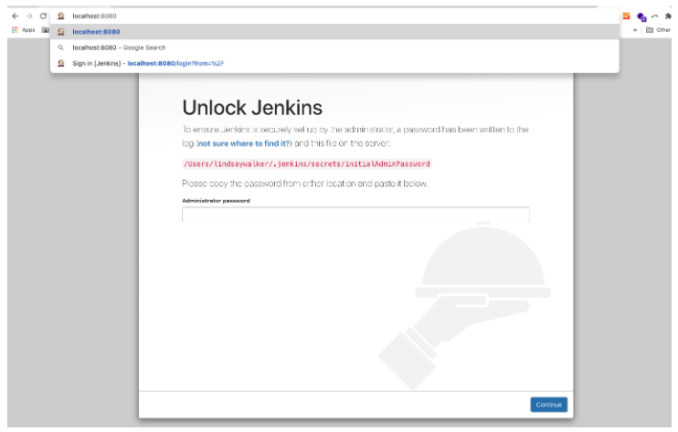
Now use your terminal to navigate to the folder above, written in red. Once you are in the folder /Users/username/.jenkins/secrets,you can run the command in the terminal:
less initialAdminPassword

You will see the contents of the file with the password in the terminal. Copy and paste the password into the Jenkins dashboard in your browser. You will be directed to create a username and password (write these down!) and enter your information. Make sure to include your email address for account recovery information. You should now have a dashboard that looks like this:

Stopping Jenkins
To stop the Jenkins process running on your machine with Homebrew, simply type:
brew services stop jenkins
Part 2: Create a Project
Keep in mind that you typically would not be the one setting up Jenkins to run your tests; your administrator or DevOps team would be adding your test code as a part of the pipeline to put code into production, typically on a staging server. Three typical jobs that are in almost every pipeline are build, test, and deploy. One of the Sauce Lab sweet spots is the ability to create the _test _project piece of the pipeline.
Now that Jenkins is loaded in the browser, let's create a **Project **and configure it to run our shallow tests against Chrome on Windows 10.
- Click New Item from the Dashboard menu.

- Give it a name based on what it's testing (example: **
- Select the Freestyle project option.
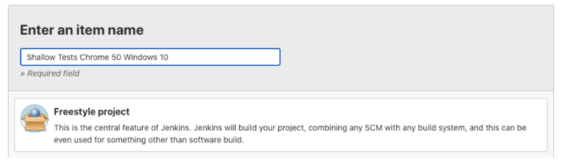
- Click OK.
This will load a configuration screen for the Jenkins project.
Jenkins Project Configuration
Once you have clicked on a project and chosen Configure from the menu, go to the Advanced Project Options section, select the Advanced button:
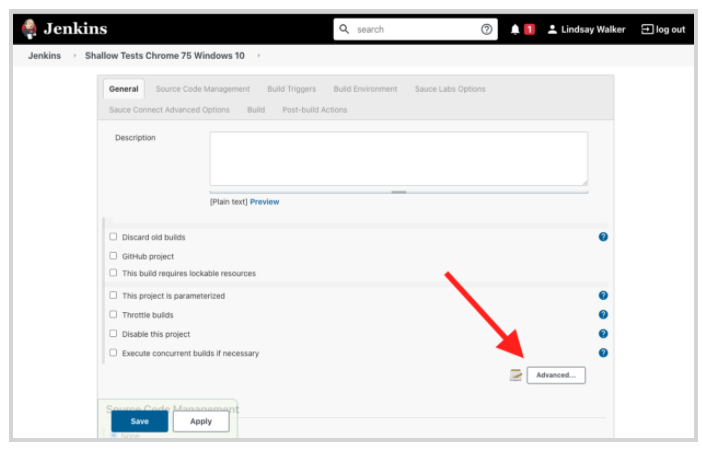
- Choose the checkbox for Use custom workspace. This is where your test files are stored on your computer. When setting up a real CI pipeline, you would direct this to the local copy of your GitHub repo.
- Provide the full path to your test code.
- Leave the Display Name field blank.

- Scroll down to the Build section and select Add build step.
- Select Execute shell..
- Add the commands below to run locally on Jenkins, testing only the tests tagged with
@Category(shallow.class), using the default environment:mvn clean test -Dgroups=tests.groups.Shallow
To return to the dashboard and see the list of projects, you can click **Back to Dashboard **in the menu. You can also click Configure to change or update the changes you just made:
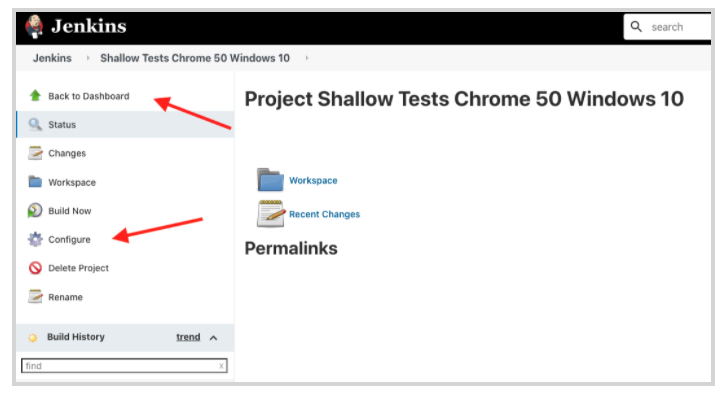
Install JUnit Jenkins Plugin
Since you are using the JUnit library, you need to set up the JUnit Jenkins plugin as a Global Tool so Jenkins can use it to report the result of tests.
First, return to the dashboard (You can do this by clicking the** Jenkins** icon in the menu at any time). Next, click on Manage Jenkins > Manage Plugins.
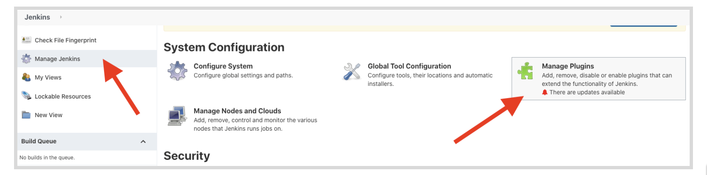
NOTE
–
Under either the Updates or Available tab, you can search for JUnit, then check the box next to the Build Reports plugin, and click the button to Download now and install after restart.
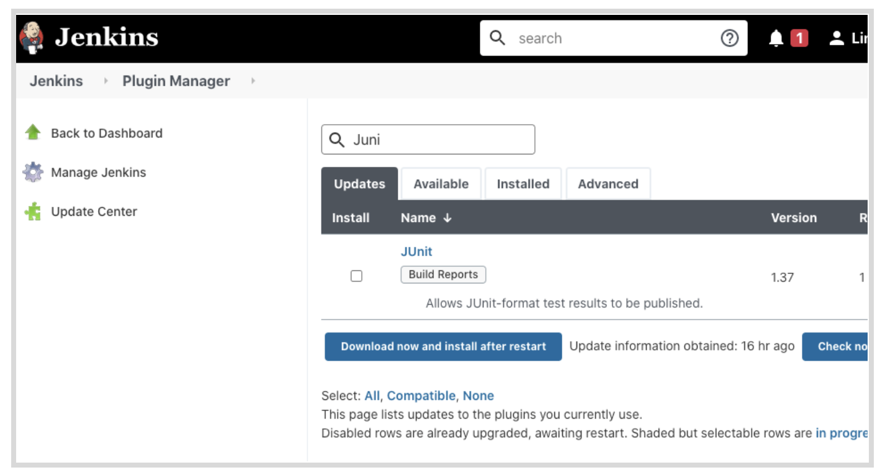
For the updates to take effect, you should wait until the download is finished.
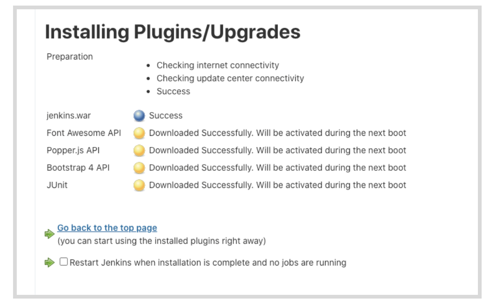
To restart (quickly), type in terminal:
brew services restart jenkins
Now that you have the JUnit Reporter plugin installed, you can go back to your test, then choose configure in the menu. Scroll down to the bottom of the configuration options to find Post-build Actions, and from the dropdown menu, choose Publish JUnit test result report.
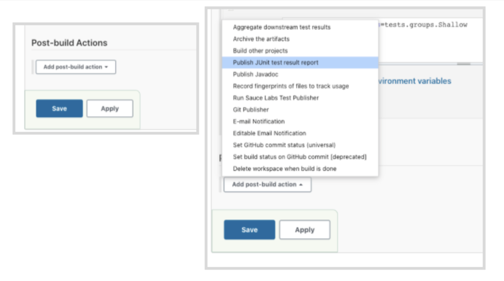
Next, configure the test file that you will put the Surefire reports in by typing target/surefire-reports/*.xmlinto the Test report XMLs field.
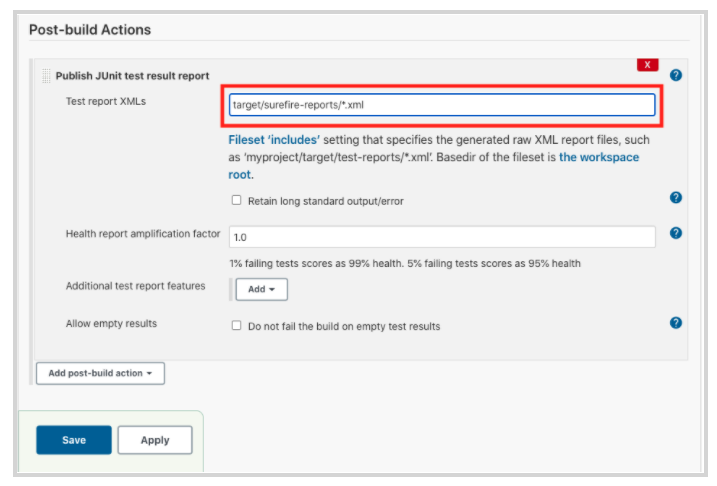
Hit save and you should be ready to run your tests.
Run Your Tests Using Jenkins
To run your test, simply click Build Now in the menu, then click on the sphere next to the test number on the list to jump to the console output.
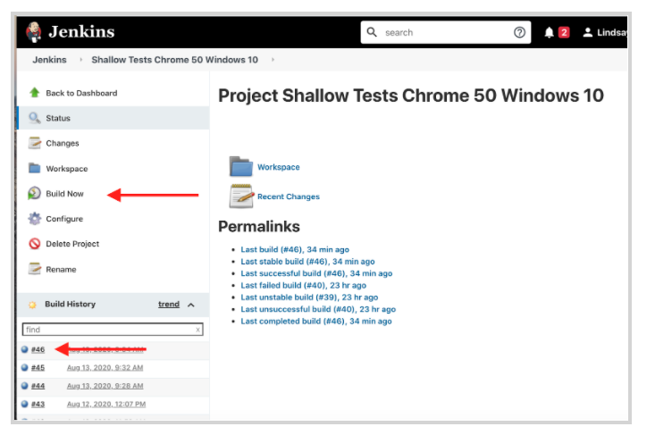
Video
Watch 5.06 Run Jenkins with Homebrew and Java for a walk through of how to run and check the configuration of your test job with the JUnit reporter for Jenkins.
NOTE
–
You haven't run a test yet that has successfully passed in Sauce Labs. In this lesson, you'll learn to connect your Jenkins server to your Sauce Labs account using the Sauce OnDemand Jenkins plugin, as well as run a test with Jenkins using Sauce Connect Proxy.
Test Reporters
You have been running your tests and observing the output in the console, however, in many cases this may not be the best method to see the status of your test. When you want to share the output of the test with others—human or software—a formatted .xml doc can be much more useful. This doc lets you obtain a longer form of printout for test results and has the potential for use with an analytics tool. Some options include:
Note that there are plugins/additional configurations you'll have to modify in the Manage Jenkins section to get these working as well. In these examples, you will not be using a reporter;instead you'll use the reporter that is built in with mocha on the console/ terminal.
Force a Failed Test
To see what a failed test report looks like, we will add a failing test method to TestLogin.java with a Shallow category after the last @Test annotation:
//filename: tests/TestLogin.java
// ...
@Test
@Category(Shallow.class)
public void forcedFailure() {
login.with("tomsmith", "bad password");
assertTrue(login.successMessagePresent());
}
// ...
If you use the password ‘bad password', the success message should not show up, so the assertTrue method will throw a failure. If you go into the console, and look under tests, the output will show you where the failure was:
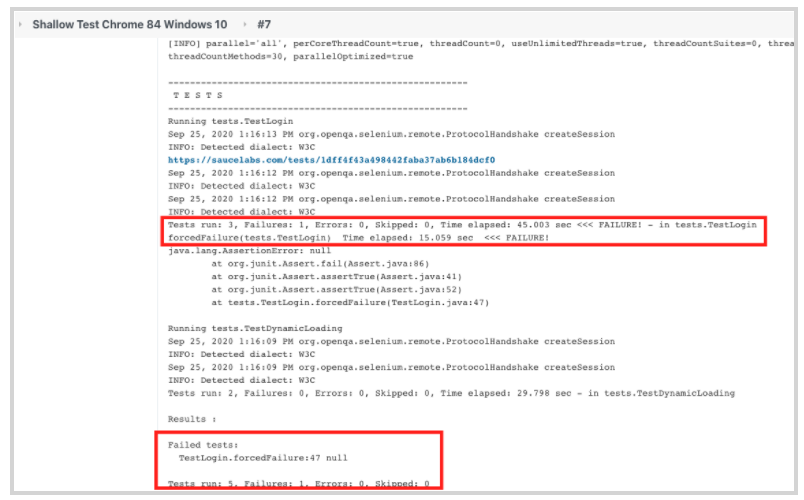
Set Up Sauce Labs OnDemand
The full reference for configuring Sauce OnDemand and support can be found here.
The first thing you will need to do is install the Git Jenkins plugin, then go to **Manage Jenkins > Manage Plugin**s. Search for **Sauce **under the **Available **tab.

Install and restart Jenkins in the terminal with Homebrew (which is quicker) by typing:
brew services restart jenkins
Once the plugin is installed, you can check under the Installed tab on the same page.
Configure Credentials with Sauce OnDemand
You can set up your Sauce Labs credentials to be passed into tests as variables running on Jenkins in the same way that you set up your tests to get the credentials stored on your personal machine as variables. The nice thing about this is that you can control which Jenkins users have access to these credentials, and allow or disallow certain people that use the same Jenkins instance to use these credentials.
Go to Security > Manage Jenkins > Manage Credentials.
Depending on how Jenkins is set up, other instances of Jenkins may have different domains. In this example, you can set things up in the** global **domain:

Click on the link for adding some credentials:
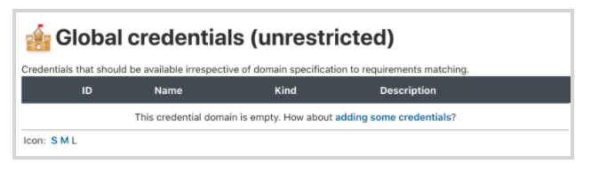
You can look on Sauce Labs under **Account **> User Settings to find your username and profile or look at the variables you set up in your .bash_profile. From the Kind dropdown, choose Sauce Labs, then enter your username and Sauce Access Key. Give it a logical tag and name as well.

Once you click Save, you should see your new access key listed under Global credentials.

Now you can go to your project and set up your credentials. Go back to your Jenkins dashboard, choose the project you created, and then **Configure **in the menu. Scroll down, and under Build Environment, click the Sauce Labs Options checkbox. Make sure the credentials you just set up are listed here.
You can configure a failed build to trigger things like e-mail messages or send information directly to Jira tickets. You can find out more here. All you need to do to get started is go to Manage Jenkins > Manage Plugins and search for an email plugin in available plugins
Running a Test with Sauce OnDemand and Sauce Connect
This part is simple: to get a Sauce Connect Proxy tunnel up and running, all you'll need to do is change one Jenkins configuration in your job. All of your tests will be routed through that tunnel.
Click on your project name from your Jenkins dashboard (example: **Shallow Test Chrome 84 Windows 10) > Configure. Under Build Environment, check the box that says Sauce Labs Support, then **check the **Enable Sauce Connect **checkbox, and choose the global credentials you set up (or add new ones).
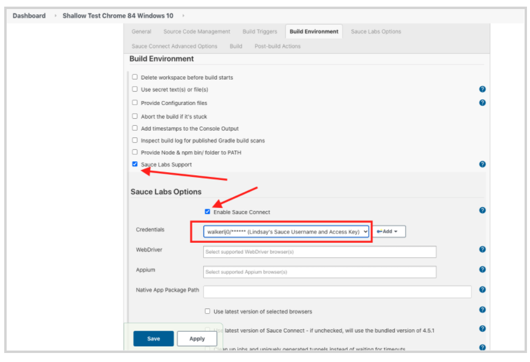
You don't have to do anything to set the variable, or install any software or run commands to get the tunnel running—Sauce OnDemand creates a tunnel and runs the tests in it for you.
Run your tests in Jenkins using Build Now (You can change the build configuration with the mvncommands back to -Dgroups=tests.groups.All)
If you look on the Sauce Labs dashboard, you should see tests being run, an active tunnel, and even past builds listed:
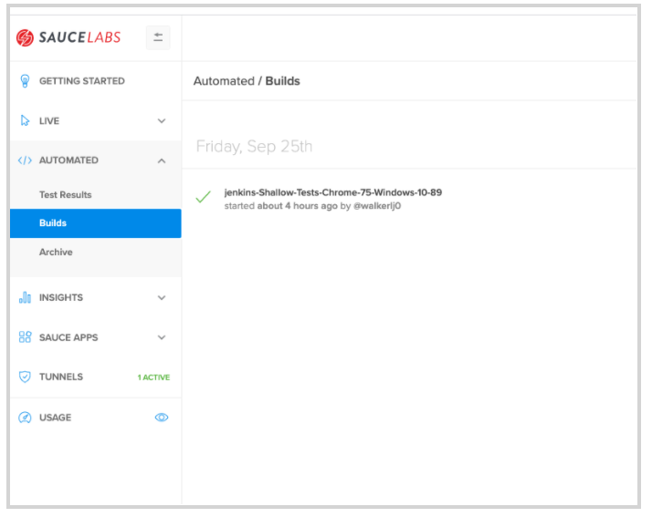
Congratulations! You now have the skills to create a basic test suite, plan your test strategy using testing best practices, and even work with your team to add testing to your software development pipeline. There is a lot more to explore both with tests and with Jenkins, so after the quiz, take a look at Module 5.09 for more resources, and visit the Sauce Labs Documentation for more information.
Here is a list breaking down a majority of the Selenium resources available, along with information about what these resources provide.
Documentation & Tips
Selenium HQ
This is the official Selenium project documentation site. It doesn't always have the most up-to-date version, but there is loads of helpful information here.
The Selenium Wiki
This is where all the good stuff is — mainly, documentation about the various language bindings and browser drivers. If you're not already familiar with it, take a look.
Elemental Selenium Archives
These are tips that will help you expand your Selenium skills to write tests for nearly anything you can imagine using Selenium for. There are over 70 different Selenium problems and solutions covered. They're in Ruby, but the code has been open-sourced with a fair number of them being ported into other programming languages. You can find the code for them here.
Sauce Labs Wiki
This is the official Sauce Labs documentation. You can find updated and maintained tips and tricks regarding web/mobile automated testing.
Blogs
The Official Selenium blog
This is where Selenium announces project updates and the occasional round-ups of testing news in the testing automation space. Definitely worth a look.
Other Selenium WebDriver blogs
At some point, someone rounded up a large list of blogs from Selenium practitioners and committers. It's a pretty good list.
The Sauce Labs blog
This is where you can find product announcements and great articles regarding Sauce Labs and the automated testing space.
Other Books
Selenium Testing Tools Cookbook
This book outlines some great ways to leverage Selenium, using a pragmatic approach.
Selenium Design Patterns and Best Practices
This book covers useful tactics and strategies for successful test automation with Selenium. While the book covers Ruby, the author has also ported the examples into Java.
Meetups
Selenium Meetups on Meetup.com
A list of in-person Selenium Meetups is available on Meetup.com. If you're near a major city, odds are there's one waiting for you.
Conferences
Selenium Conference
This is the official conference of the Selenium project, where practitioners and committers gather and share their latest testing knowledge and experience. . Selenium holds two conferences each year, convening in cities all over the world.
Selenium Camp
This is an annual Selenium conference in Eastern Europe (in Kiev, Ukraine) organized by XP Injection.
Other Testing Conferences
A helpful website that lists all of the testing conferences out there.
SauceCon
This is the Sauce Labs annual conference, where they invite speakers from the industry to impart their knowledge and techniques on the testing community. This conference also offers the opportunity to talk to Sauce Labs employees and other platform users.
Videos
Selenium Conference Talks
All of the talks from The Selenium Conference are recorded and made freely available online.
Selenium Meetup Talks
Some of the Selenium Meetup Groups record their talks and publish them afterwards.
Mailing Lists
Selenium Developers List
This is where developers discuss changes to the Selenium project, both technically and administratively.
There can be a lot of content in these groups, But you can easily search and find answers to many questions.
Forums
These are the usual developer-centric forums where you can search for answers to questions you're facing, that can help you find answers that a traditional search engine may not.
Issues
If you're running into a specific and repeatable issue that just doesn't make sense, you may have found a bug in Selenium. You'll want to check the Selenium Issue Tracker to see if it has already been reported. If not, then create a new issue – assuming you're able to provide a short and self-contained example that reproduces the problem.
This is known as SSCCE (a Short, Self Contained, Correct (Compilable), Example). For a tongue-in-cheek take on the topic, see this post.
Chatting With the Selenium Community
The Selenium Chat Channel is arguably the best way to connect with the Selenium community and get questions answered. This is where committers and practitioners hang out day in and day out.
You can connect either through Slack or IRC. Details on how to connect are available here.
Once connected, feel free to say hello and introduce yourself. But more importantly, ask your question. If it looks like no one is chatting, ask it anyway. Someone will see it and eventually respond. The benefit of being a fly on the wall is that you gain insight into other problems people face, possible solutions, and the current state of the Selenium project and its various pieces.